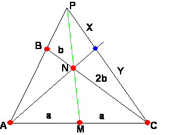
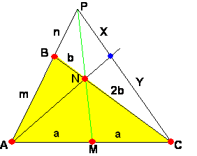

Para el aula.
Problema 275
01. En un triángulo ABC, M es el punto medio del lado AC y N es el punto del lado BC tal que CN = 2BN. Si P es el punto de intersección de las rectas AB y MN, demuestra que la recta AN corta al segmento PC en su punto medio.
X Olimpíada Matemática Rioplatense ( San Isidro, 12 de Diciembre de 2001)(Nivel I – Primer Día)
Solución deProf.: William Rodríguez Chamache, profesor de geometria de la "Academia integral class" Trujillo- Perú (Proyecto geometría interactiva
:
Según el problema debemos demostrar que x=y

En el triángulo ABC aplicamos el teorema de menéalo para encontrar una relación entre m y n
http://www.geometriainteractiva.com/william/semejanzacolegio/menel.htm
(a)(2b)(n)=(a)(b)(m+n)
De donde obtenemos que: m=n

Finalmente en le triángulo APC aplicamos el teorema de ceva.
(a)(y)(n)=(a)(x)(m) de donde obtenemos que: x=y lo que se quería demostrar